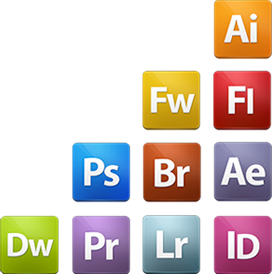

Highlights and Education
- Excellent knowledge of Adobe Creative Suite including Photoshop, Illustrator, InDesign, Flash, Acrobat, Dreamweaver, Premier Pro as well as Microsoft Products;
- Strong hand-coding skills in HTML/CSS
- Experience in designing for mobile devices
- Knowledge of ASP, JavaScript, XML, PHP
- Experience with email campaign deployment systems and email list management
- Strong organizational skills and ability to multi-task between projects on a time-sensitive basis
- Knowledge of usability and user experience best practices
- Solid analytical, research, and problem solving skills
- Experience in preparation proposals and deliver presentations to clients
- Ability to process suggestions, corrections, and feedback professionally
- Self-motivated, able to work independently and as part of a team
- Detail oriented, able to meet deadlines and goals

ADDITIONAL TRAINING
- Software Quality Assurance Specialist Training
Vancouver, BC
- Photography course
Vancouver, BC